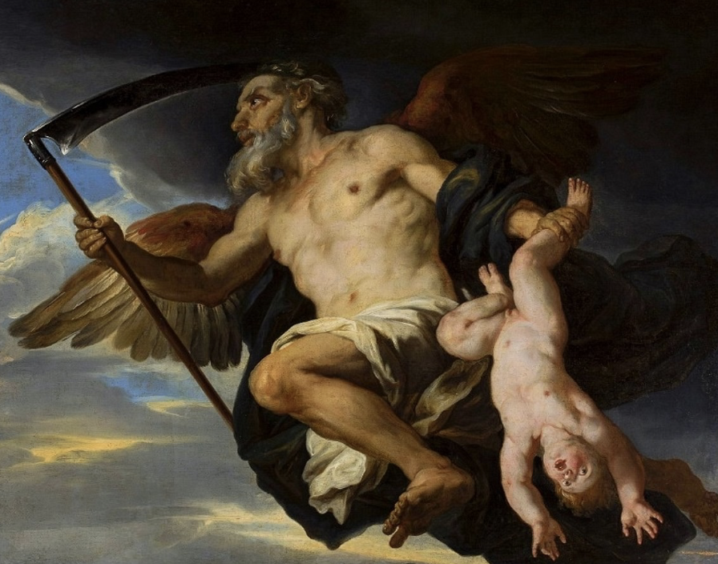

| Parent(s) | Épouse | Enfants |
|---|---|---|
| Ouranos & Gaïa | Rhéa | Hestia, Déméter, Héra, Hades, Poseidon, Zeus (les cinq premiers avalés à leur naissance) |
Cronos, le plus jeune des Titans, osa défier son père Ouranos. Armé de la faucille forgée par Gaia, il surgit de l’ombre et renversa le Ciel, mettant fin à son règne. Ainsi commença l’ère des Titans.
Sous le règne de Cronos s’ouvrit l’Âge d’or : une époque de prospérité où les hommes vivaient sans souffrance ni travail. Mais derrière cette paix apparente se cachait une peur terrible.
Une prophétie annonçait que Cronos serait détrôné par l’un de ses propres enfants, comme il l’avait fait avec son père. Terrifié, il décida de déjouer le destin. Chaque fois que Rhéa donnait naissance à un enfant, il l’avalait immédiatement.
Hestia, Déméter,Héra, Hades, Poseidon… Tous disparurent dans son ventre. Désespérée, Rhéa sauva son dernier fils, Zeus, en lui donnant une pierre enveloppée dans des langes, qu’il avala sans méfiance. Zeus grandit en secret puis revint défier son père.
Contraint par la ruse, Cronos recracha ses enfants. La grande guerre des dieux, la Titanomachie , éclata alors. Zeus triompha et précipita les Titans dans le Tartare.
Ainsi s’accomplit la prophétie : nul ne peut échapper au destin, pas même un roi des Titans.